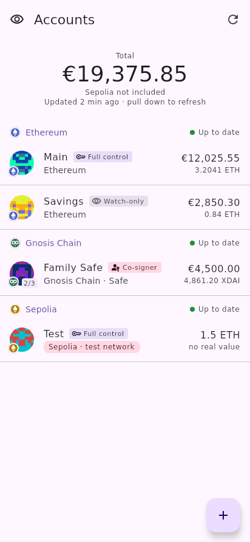
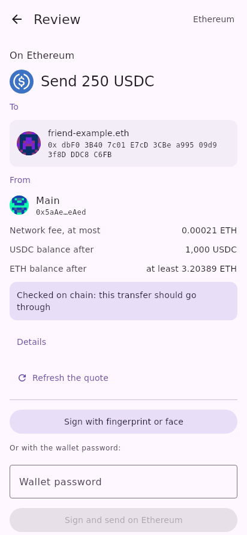
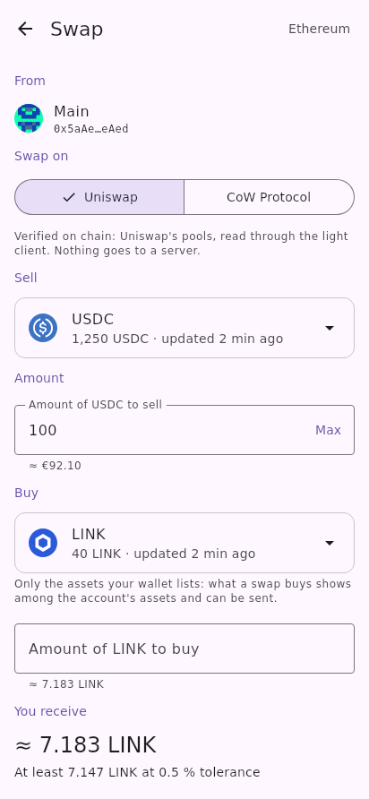

A wallet that checks the blockchain itself
Most wallet apps ask a company's server what you own and show you the answer. Punicus asks the Ethereum network directly and checks every answer on your own device, before it shows you a balance or lets you sign.
For Android, macOS and Linux. Free and open source. For ordinary Ethereum accounts and for shared Safe accounts.

Who tells your wallet what you own?
A blockchain is shared by thousands of computers. A wallet app has to ask someone what is on it. Whom it asks, and whether it can check the answer, makes the difference.
Most wallet apps
- Your phone asks a company's server"What does this account hold?"
- The server answers"3.2 ETH."
- The app shows the answerIt has no way to tell whether the answer is true.
You take the company's word, and the company sees every account you look at.
Punicus
- Your phone asks the network itselfAny of the many computers that keep the chain can answer. None of them belongs to Punicus.
- The answer comes with a proofA short piece of maths that ties "3.2 ETH" to the chain the network has signed.
- Punicus checks the proof on your deviceA program called a light client, built into the app, does the checking.
Only a checked answer is shown. What cannot be checked is shown as "not available", never as a guess.
No company in the middle
There is no Punicus server to trust, to go down or to turn you away. The wallet talks to the network itself.
It says when it does not know
While the wallet catches up with the network, it keeps the last checked balance on screen with its date, and says that it may have changed.
It collects nothing
No sign-up, no analytics, no crash reports. The developer learns nothing about you or your accounts.
What you can do with it
These are the app's own screens. The numbers on them are examples.
-

See what you own
Your coins and tokens, and what they are worth in your currency. Every balance is proven before it is shown, and the screen says how fresh it is.
-

Send and receive
Send to an address or to a name like name.eth. Before you sign, Punicus tries the transfer against the chain and tells you whether it should go through and what it costs at most. To receive, show your QR code.
-

Share an account with Safe
A Safe is an account that needs several approvals, such as 2 of 3 owners: for a family, a team, or your own devices. Create one or add one you already have, then propose, sign and send its transactions.
-

Swap tokens
Swap on Uniswap, at a price the wallet reads from Uniswap's pools and checks itself, or choose CoW Protocol. You see the least you will receive before you confirm. Not on Gnosis Chain yet.
-

Connect to web apps
Use your accounts in web apps (dApps) through WalletConnect. An app sees only the accounts you pick, and each request is spelled out and checked before you sign it.
-

Follow a transfer to the end
After you send, Punicus follows your transaction until the network has finalized it and it can no longer be reversed. Activity keeps what this device sent, and each account's token transfers.


Also in the app
- Watch any address
- Add an address without its key to keep an eye on it. Punicus tells you what it is: an ordinary account, a Safe or another contract.
- Three networks
- Ethereum and Gnosis Chain, with real funds, and the Sepolia test network for trying things out with coins of no value. Each can be turned off.
- NFTs and ENS names
- The NFTs an account holds, listed only once they are proven to be there, and the ENS names that point to it.
- Gnosis Pay
- The account behind a Gnosis Pay card is recognised. A member whose key is in the wallet can send from it: queued first, sent after the account's waiting time.
- Fingerprint or face unlock
- Optional, on Android, on a Mac with Touch ID and on iPhone. Your wallet password keeps working.
- A simple view and a detailed one
- The simple view is the default. The detailed view shows how each number was checked, block by block.
- A home-screen widget
- On Android, one checked exchange rate on your home screen.
- Warnings before a network upgrade
- When the network is about to change in a way this version cannot follow, the app warns you ahead of time and points to the update.
Your keys stay on your device
Whoever holds an account's key controls its funds. Punicus keeps yours on your device, and tells you plainly what leaves it.
-
Two locks on every key
Keys are stored encrypted. Opening one takes your wallet password and a secret held by your device's security chip, so a copy of the file is useless anywhere else. On Windows and Linux the password stands alone for now, and the app says so.
-
A recovery phrase you write down once
A new account comes with 12 words, shown only while you create it. They are your backup: on paper, never in a photo or a chat.
-
Risky Safe changes are refused
A Safe transaction that would let an add-on (a module) move the Safe's funds, or replace the part that checks its signatures, is shown and never signed here.
-
Open for anyone to inspect
Punicus is free software under the GNU GPL v3. How keys are protected, in plain words and with the code.
| Who | When | What they see |
|---|---|---|
| Computers of the network (peers) | Always: this is how the wallet reads the chain | Your internet address (IP), and which account a question is about |
| Checkpoint servers | Only if you ask for a fresh starting point after a long time offline | Your IP address. No account |
| WalletConnect's relay | Only while you connect a web app | Your IP address and when you are connected. The messages are encrypted |
| CoW Protocol | Only for a swap you send to CoW | That swap: the account, the tokens, the amounts, and your IP address |
None of them is run by Punicus, and none can sign for you. The details are in the privacy policy.
Download Punicus
Free, with no account to create. The installers are published on GitHub.
Punicus is early software. Every version so far is a pre-release. It works with real funds on Ethereum and Gnosis Chain, so start with small amounts, or turn on the Sepolia test network in Settings and try it there first.
Every version, with its files and what changed, is on the releases page. Pick the newest one at the top.
-
Android
Android 10 or newer. The file ends in
-android.apk; you install it yourself. -
macOS
Files ending in
-arm64.dmg(Apple silicon: M1 or newer) and-x64.dmg(Intel). -
Linux
Debian and Ubuntu packages:
-x64.deband-arm64.deb. -
Windows
Not published yet. The Windows installer follows once the engine inside Punicus runs on Windows.
Coming later -
iPhone
A development build only for now. Punicus is not in the App Store yet.
Coming later
Installing on Android
Punicus is not in an app store yet, so you install the file yourself. Download the APK, then open it. Android asks whether your browser may install apps: allow it for this once, then tap Install. To update, download the newer APK and install it the same way.
Opening it on a Mac
Open the dmg and drag Punicus to Applications. The app is not yet notarized by Apple, so macOS stops its first start. Right-click the app, choose Open and confirm. On macOS 15 or newer, try to open it once, then go to System Settings, Privacy & Security, and choose Open Anyway.
Installing on Debian or Ubuntu
Download the package for your computer (x64 for most PCs), then install it from a terminal in the folder you saved it to:
sudo apt install ./Punicus-*.deb
Checking that the Android app is the real one
The Android app is signed with Punicus's release key. With Android's build tools installed, this prints who signed a file you downloaded:
apksigner verify --print-certs Punicus-*-android.apk
The certificate's SHA-256 must be:
d7a33aee06dbedab0e640283ff1b8c8cc919cf3a82aa3bc8fd7c67a3abdddec0
New to this? Start with the guide
It walks through creating an account, bringing in one you already have, and adding or creating a Safe, with the app's screens beside each step.
Not built yet
Punicus says what it cannot do. Still to come: a Windows installer and an App Store build, a full history of the plain ETH an account received, recovery options for a Safe, and using another wallet app as a Safe owner's signer.
What changed in each version is in the changelog.